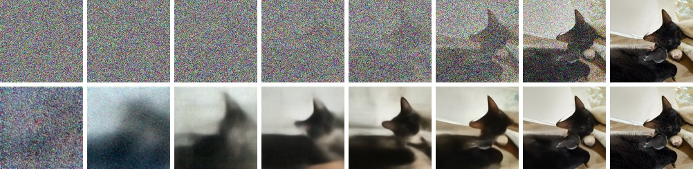
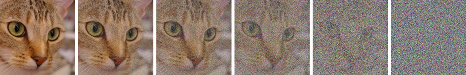
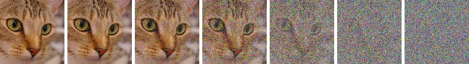
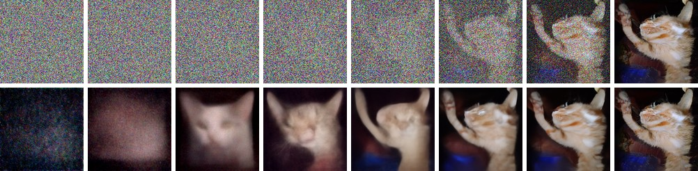
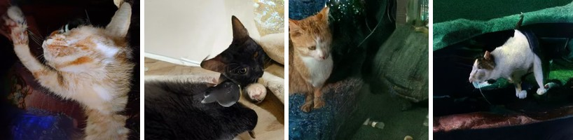

Lecture 15
SPC5004: Tools and Applications of Generative AI
Prof. Anthony E. Phillips
Tuesday, 17 November 2026
A VAE generates an image in one shot: sample \(z \sim \mathcal{N}(0, I)\), decode it, done.
Diffusion models also take many small steps. But every step works on the whole image: it starts as pure noise, and is refined a little at a time until a picture emerges.

Top row: the image at steps \(t = 999, 900, 800, 700, 600, 400, 200, 0\) of generation. We’ll come back to the bottom row. Model: google/ddpm-cat-256, from the original DDPM authors.
Today: how such a model is trained, what network it uses, and how it generates.
The simplest recipe: mix the image \(x_0\) with random noise, by an amount \(a\) between 0 and 1.
\[x = (1 - a)\, x_0 + a \cdot \text{noise}\]

\(a = 0, 0.2, 0.4, 0.6, 0.8, 1\). Photo: scikit-image sample data, CC0.
Real diffusion models use Gaussian noise \(\epsilon \sim \mathcal{N}(0, I)\): one independent normal random number per pixel and colour channel.
We add noise in \(T\) small steps, usually \(T = 1000\). Step \(t\) does
\[x_t = \sqrt{1 - \beta_t}\; x_{t-1} + \sqrt{\beta_t}\; \epsilon\]
Because Gaussians add up to Gaussians, we can skip the intermediate steps:
\[x_t = \sqrt{\bar\alpha_t}\; x_0 + \sqrt{1 - \bar\alpha_t}\; \epsilon, \qquad \bar\alpha_t = \prod_{s=1}^{t} (1 - \beta_s)\]
tensor([0.9999, 0.7221, 0.2789, 0.0574, 0.0064])So training never has to simulate 1,000 steps: one line makes a noisy image at any \(t\).

\(t = 0, 50, 100, 200, 400, 600, 999\), with the DDPM schedule.
Orange: \(\sqrt{\bar\alpha_t}\), the multiplier on \(x_0\). Grey: \(\sqrt{1-\bar\alpha_t}\), the multiplier on \(\epsilon\).
\(x_t = \sqrt{\bar\alpha_t}\, x_0 + \sqrt{1-\bar\alpha_t}\, \epsilon\), with \(\sqrt{\bar\alpha_t} =\) 0.81 and \(\sqrt{1-\bar\alpha_t} =\) 0.59.
Drag the slider or the chart. The noise \(\epsilon\) stays the same until you ask for new noise.
Suppose we train a network to look at \(x_t\) and predict the clean image \(x_0\).
That’s the VAE’s blur problem again. Generating in one shot from pure noise gives the average cat, not a cat.
Suppose the only images in the world were these 1,000 cats. Then we can work out the best possible guess at \(x_0\) exactly.
The best guess is an average of all 1,000 cats, weighted by how likely each one is to have produced \(x_t\). Right now the weight is spread over about 18 of them.
32 × 32 cat images from CIFAR-10 (Krizhevsky, 2009). DDPM schedule.
Bottom row: the model’s prediction of the clean image \(\hat x_0\), made at each of the steps shown above it.
So instead of jumping to the prediction, we take a small step towards it, then ask again.
Each guess is made from a slightly cleaner input than the last, so the guesses sharpen as we go. Early steps settle what the picture is; later steps settle the details.
Each “image” here is just two numbers: a point. The data (grey) lie on a spiral.
Every step uses the best possible guess for these 500 points, exactly as on the cats slide.

Another sample from the same model. Same steps as before: the image \(x_t\) on top, the guess \(\hat x_0\) below.
At \(t = 800\) the model was heading for a cat facing us. By \(t = 600\) it had settled on a quite different pose. Small steps leave room to change course; a single jump would have committed to the blur.
Two options, each from the noisy image \(x_t\) and the step \(t\):
Given \(x_t\) and \(t\), either one gives you the other:
\[x_0 = \frac{x_t - \sqrt{1 - \bar\alpha_t}\;\epsilon}{\sqrt{\bar\alpha_t}}\]
But the noise is always drawn from \(\mathcal{N}(0, I)\), whatever the image and whatever \(t\). That makes it a target of the same size and shape at every step, and in practice it trains more stably.
\[\mathcal{L} = \big\lVert \epsilon - \hat\epsilon_\theta(x_t, t) \big\rVert^2\]
For each training image:
No labels needed: like an autoencoder, the data supervise themselves. And the network practises every noise level, not just one.
With the diffusers library, which we’ll use from now on:
scheduler = DDPMScheduler(num_train_timesteps=1000) # holds the betas
for clean_images in dataloader:
noise = torch.randn_like(clean_images)
t = torch.randint(0, 1000, (len(clean_images),)) # one random step per image
noisy_images = scheduler.add_noise(clean_images, noise, t)
noise_pred = model(noisy_images, t).sample
loss = F.mse_loss(noise_pred, noise)
loss.backward()
optimizer.step()
optimizer.zero_grad()Generation runs the steps in reverse:
scheduler.step uses the noise prediction to make a guess at \(x_0\), and moves part of the way towards it. It knows the schedule, so it knows how big a step to take at each \(t\).
Four samples from google/ddpm-cat-256, from four different starting noises. None of these is a photo.
We need a network whose output is the same size as its input: an image in, a prediction out. The usual choice is a UNet.
Shapes are channels × height × width, for the small UNet you’ll build in the lab.
The UNet looks like our convolutional autoencoder, but it has a different job.
The same noisy-looking pixel means different things at different steps: at \(t = 50\) it is mostly image, at \(t = 950\) mostly noise.
| Model | Parameters |
|---|---|
| A minimal UNet, no attention, no \(t\) (lab) | 309,057 |
diffusers UNet2DModel, with attention (lab) |
1,707,009 |
google/ddpm-cat-256, 256 × 256 colour images |
113,673,219 |
For comparison, SmolLM2-135M, the language model we fine-tuned to generate text, has about 135 million.
The schedule \(\beta_1, \dots, \beta_T\) decides how fast the image disappears.
The DDPM schedule is linear in \(\beta_t\). Nichol and Dhariwal (2021) proposed instead choosing \(\bar\alpha_t\) directly, as a cosine:
\[\bar\alpha_t = \cos^2\!\left(\frac{t/T + s}{1 + s} \cdot \frac{\pi}{2}\right), \qquad s = 0.008\]
diffusers calls this beta_schedule="squaredcos_cap_v2".